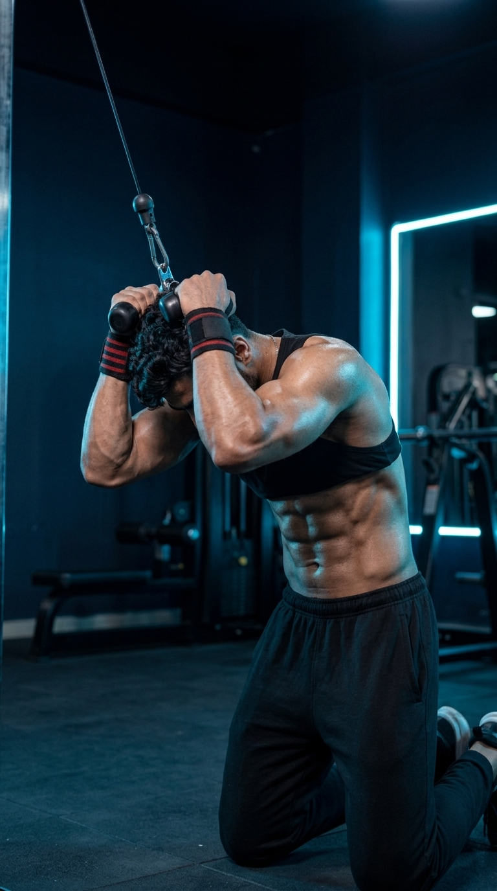

Primary Muscle
Rectus Abdominis
Build Stronger, Thicker, and More Defined Abs
The Cable Crunch is one of the most effective weighted core exercises for strengthening and developing the abdominal muscles. Performed using a high pulley cable machine, it places constant tension on the rectus abdominis throughout every repetition, helping improve core strength, spinal stability, and muscle definition. Whether your goal is building visible abs, enhancing athletic performance, or increasing core power for compound lifts, the Cable Crunch is an excellent exercise for lifters of all experience levels.

Rectus Abdominis
Cable Machine
Beginner
Strength
Discover which muscles drive the Cable Crunch and how the supporting muscles work together to build a stronger, more stable core while improving trunk control, spinal stability, and abdominal strength.
Produces Spinal Flexion to Curl the Torso Toward the Hips Throughout Every Repetition
Assist with Trunk Flexion While Improving Core Stability and Resisting Unwanted Rotation
Braces the Core and Stabilizes the Spine Throughout the Entire Movement
Help Stabilize the Lower Body and Assist During Controlled Trunk Flexion
Discover how the Cable Crunch strengthens your abdominal muscles, improves core stability, increases trunk flexion strength, enhances athletic performance, and helps build stronger, more defined abs through progressive resistance.
The Cable Crunch directly targets the rectus abdominis with constant resistance, helping build stronger, thicker, and more defined abdominal muscles.
Unlike bodyweight crunches, the cable machine maintains continuous tension throughout the entire range of motion, increasing muscle activation.
A stronger core enhances trunk stability, force transfer, and control during squats, deadlifts, presses, running, and other athletic movements.
Strengthening the abdominal muscles improves spinal stability and helps the core resist unwanted movement during daily activities and resistance training.
The adjustable cable stack makes it easy to gradually increase resistance, promoting continuous strength and muscle development over time.
When combined with proper nutrition and a healthy body fat percentage, Cable Crunches contribute to stronger, thicker abdominal muscles for improved core definition.
Follow these step-by-step instructions to perform the Cable Crunch with proper body positioning, controlled spinal flexion, and continuous abdominal tension to maximize muscle activation while minimizing unnecessary stress on your lower back.
Attach a rope handle to a high pulley. Kneel facing the cable machine and grasp the rope with both hands, positioning the ends beside your temples.
Choose a manageable weight that allows you to move slowly without using momentum.
Tighten your abdominal muscles, keep your hips stable, and maintain a neutral lower back before beginning the movement.
Think about locking your hips in place so only your spine moves during the crunch.
Exhale as you curl your upper body downward by flexing your spine. Bring your elbows toward your knees while keeping the rope close to your head.
Initiate every repetition with your abs rather than pulling the weight using your arms.
Pause briefly at the bottom position and consciously squeeze your abdominal muscles before returning to the starting position.
A one-second pause at peak contraction helps increase abdominal muscle activation.
Inhale as you slowly return to the starting position under control, maintaining tension in your core throughout the movement before beginning the next repetition.
Never allow the weight stack to pull you back quickly. Control the lowering phase for maximum muscle growth.
Avoid these common technique mistakes to maximize abdominal activation, maintain proper spinal movement, and perform the Cable Crunch safely and effectively.
Using your arms to pull the rope down reduces abdominal activation and shifts the workload away from your core.
Keep the rope beside your head and initiate every repetition by contracting your abdominal muscles.
Hinging at the hips turns the exercise into a hip movement and significantly reduces activation of the rectus abdominis.
Keep your hips relatively fixed and curl your torso by flexing your spine throughout the movement.
Excessive weight often causes momentum, shortens the range of motion, and prevents proper abdominal contraction.
Reduce the load and perform each repetition slowly with full control and a complete range of motion.
Allowing the cable to pull you back quickly reduces time under tension and limits the effectiveness of the exercise.
Control the return phase, maintain core tension, and keep the movement smooth from start to finish.
Apply these expert coaching cues to improve your Cable Crunch technique, maximize abdominal activation, maintain proper spinal movement, and build a stronger, more defined core with every repetition.
The Cable Crunch is a spinal flexion exercise. Keep your hips relatively fixed and curl your torso downward to fully engage the abdominal muscles.
Crunch your ribs toward your pelvis.
Avoid relaxing at the top of the movement. Maintain continuous tension on your abdominal muscles throughout every repetition.
Never let the weight stack rest between reps.
Perform both the lowering and returning phases under control to increase time under tension and improve abdominal muscle recruitment.
Slow reps build stronger abs than fast reps.
Pause briefly at the bottom of each repetition and consciously contract your abs before returning to the starting position.
One strong squeeze is worth more than extra weight.
Progress from learning proper Cable Crunch technique to building stronger, more defined abdominal muscles through improved control, increased resistance, and advanced core training variations.
Learn the correct kneeling position, maintain a neutral lower back, and perform controlled spinal flexion using light resistance.
Technique, spinal flexion, core bracing, and controlled movement.
Slow down each repetition, pause at peak contraction, and maintain constant cable tension throughout the entire range of motion.
Time under tension, mind-muscle connection, and movement control.
Gradually increase the cable weight while preserving perfect technique, a full range of motion, and controlled repetitions.
Progressive overload, abdominal strength, and muscle growth.
Progress to advanced movements such as Weighted Cable Crunches, Decline Sit-Ups, Hanging Leg Raises, and Ab Wheel Rollouts to further develop total core strength and abdominal definition.
Maximum core strength, hypertrophy, stability, and long-term progression.
Find answers to common questions about Cable Crunch technique, muscles worked, proper form, training volume, and how to build stronger, more defined abdominal muscles safely and effectively.
The Cable Crunch primarily targets the rectus abdominis while also engaging the obliques and transverse abdominis to stabilize your torso throughout the movement.
Cable Crunches provide constant resistance throughout the movement and allow progressive overload, making them more effective for building abdominal strength and muscle than standard bodyweight crunches.
Start with a light weight that allows you to perform 10–15 controlled repetitions with perfect technique. Increase the resistance only after you can maintain proper form throughout every set.
Yes. Beginners can safely perform Cable Crunches by using light resistance, focusing on controlled spinal flexion, and mastering proper technique before increasing the weight.
Perform 2–4 sets of 10–15 repetitions using slow, controlled movements. Focus on quality contractions instead of simply moving heavier weights.
Train your abs two to three times per week as part of a balanced core program, allowing at least 48 hours of recovery between challenging abdominal workouts.
Explore other core exercises that complement the Cable Crunch and help you build stronger abdominal muscles, improve trunk stability, and develop complete core strength through a variety of weighted and bodyweight movements.
Continue strengthening your core with detailed exercise guides covering proper technique, muscles worked, common mistakes, expert coaching tips, and progression strategies designed for every fitness level.